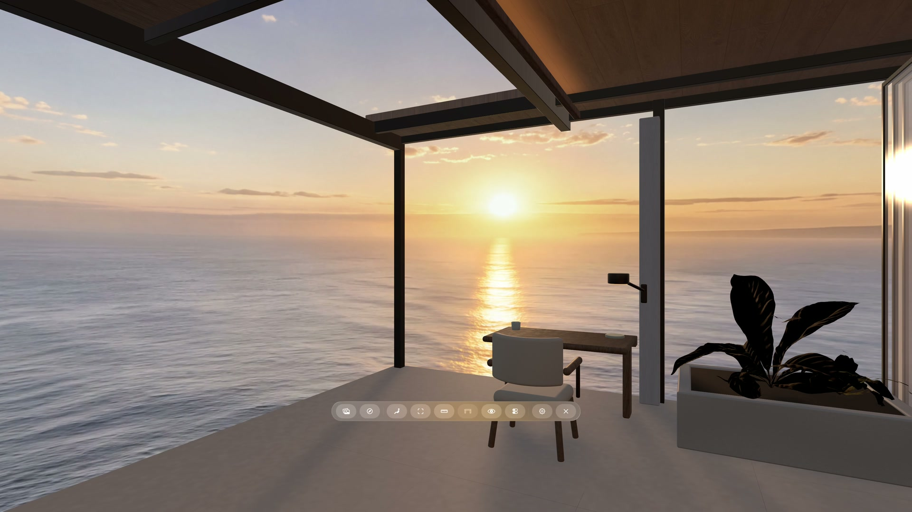
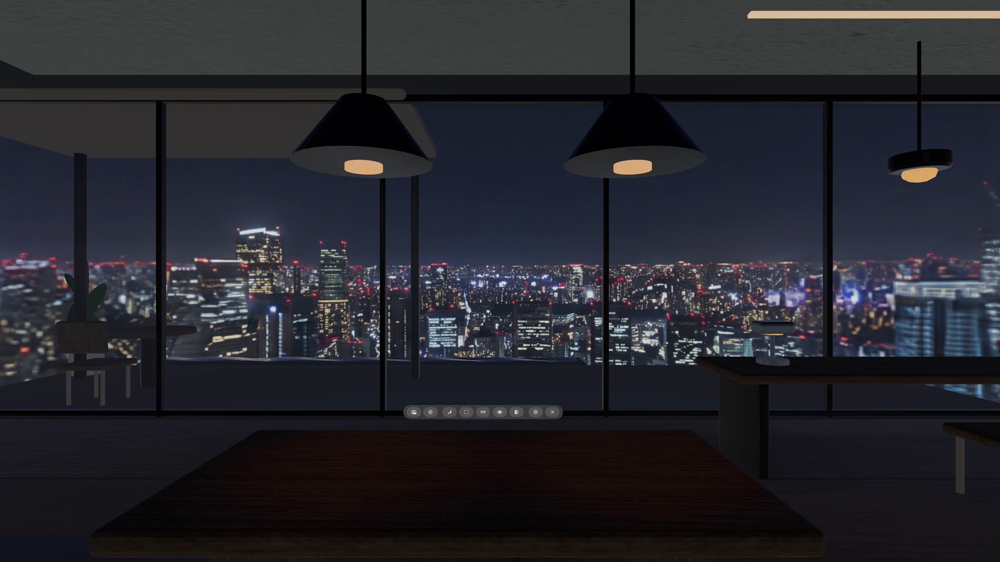
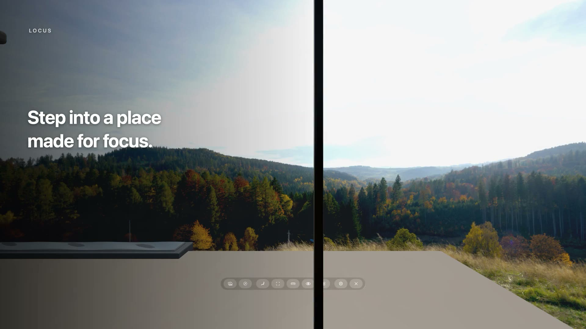

Release stories
What’s New in Locus
Meet the features that have shaped Locus, with the newest release first. Each story focuses on the most important change and the experience it unlocks.

Locus 1.1.3 · LatestBring your Views to life.Animated Views introduce living water and ambient sound to immersive workspaces.
Locus 1.1Make your workspace yours.Bring panoramas in from the web, organize Places, shape Room lighting, and keep favorite sites close.
Locus 1.0A spatial workspace with a sense of place.Pair a 360° View with a 3D Room, keep your real desk nearby, and bring the web into your space.